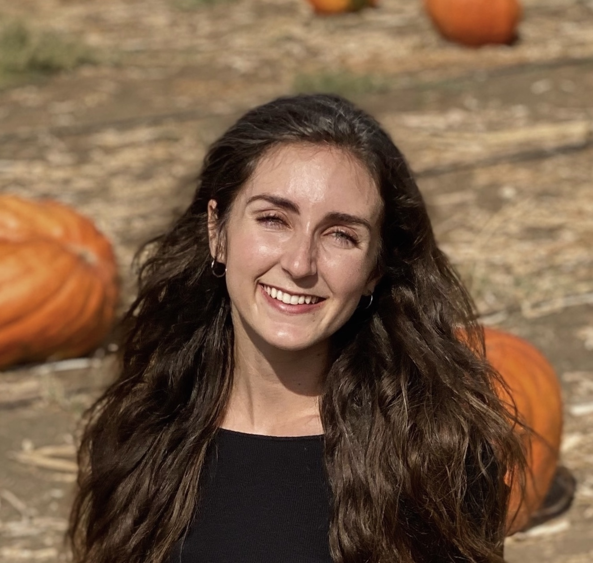

About Emma
Throughout collegiate and my professional career, I have always been drawn to storytelling and figuring out how to make complex topics more accessible and easily understandable.
How it started
When I look back on where my interest in science and technology began, I can't help but laugh. It
all started when I was 11 years old, and like many kids my age, I was absolutely obsessed with the online
virtual
world called neopets.com (remember that one?). At one point, I came across an HTML tutorial on the website.
It was
an acutal step-by-step tutorial that taught kids how to make their own webpages! I was enthralled by the
idea of customizing my Neopet's own webpage using their online (albeit clunky) resources. I spent hours
tinkering with the
interface, learning how to type and becoming more familiar with how computers worked. At the same time, I
had so many questions about
how it all actually worked.
Many, many years later,
I signed up to be a science and tech journalist for my university's student newspaper. Week by week, I wrote
about stories that spotlighted news around science and technology in my community. I had the pleasure of
interviewing some of the brightest professors, scientists, and healthcare professionals at UC Davis — taking
their thoughts and ideas and transforming them into stories for the UC Davis student body. It was an
experience that I'm forever grateful for, and one that set the foundation for my professional career.
I took my love for learning into the classroom following graduation. As an elementary assistant teacher, I
specialized in teaching language arts classes and providing one-on-one writing assistance.
Soon after, I pivoted back into science and technology writing to take on a Content Strategist role with The
Bulleit Group, an award-winning public relations agency. There, I worked with our account teams to transform
our
clients’ business goals and acumen into strategic, compelling, and memorable content output. My role
involved drafting
press
releases, blog posts, internal messaging docs, social media posts, presentation decks, newsletters, internal
documentation, and more — all within a fast-paced, deadline-driven working environment. I have also worked
on long-term
content projects, such as competitive audits
and entire brand overhauls, which have helped our clients to adopt more optimal content strategies. My
editorial contributions
to The Bulleit Group have helped our clients win awards and become strategic, competitive forces in their
respective industries.
How it's going
Now, I'm ready for my next challenge and diving deeper into the technical realm. I'm currently pursuing a career in technical writing, information architecture, API documentation, and/or UX writing.
I am a curious, organized, and creative person by nature. Though the structure of my work is often
fast-paced and project-oriented, I’ve always had a sharp eye for
detail. With every project I take on, I’m careful to ensure that our team has all the resources we need to
successfully take the project to completion and meet the client’s business goals.
To me, every day offers an opportunity to learn something new. And as a former educator, I have always been
motivated to help others understand complex topics and make learning experiences enjoyable (and accessible)
for any audience. Even
after receiving my degrees in Human Development and Sociology at UC Davis, I continue to pursue
opportunities that will further my learning and cotribute to the world around me. I am proficient in
HTML/CSS, Git, and DITA XML, and I'm excited
to continue to learn and help others through my skills. I look forward to demonstrating ways to craft
high-quality documentation for users!
When I'm not writing, I love hiking in the North San Diego County area, working on creative projects,
and
trying out new coffee shops. Right now I'm learning JavaScript and Adobe InDesign!
Connect with me on LinkedIn and GitHub!